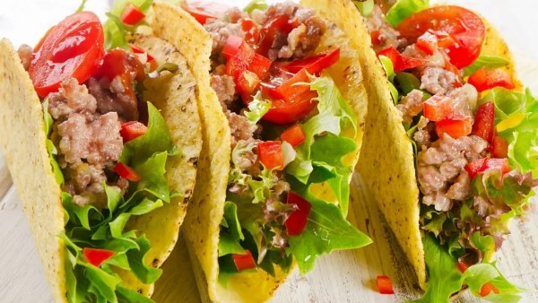
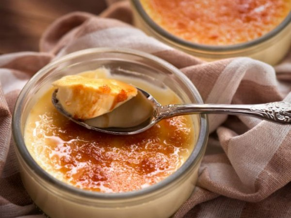

História da Culinária do Mexico
A culinária mexicana é uma mistura rica de sabores, tradições e influências que refletem a história e a cultura do país.
Origens Indígenas
Antes da chegada dos europeus, os povos nativos, como os Astecas, ja cultivavam milho, feijão, cucurbita, pimenta chili, tomate, abóbora, abacate, cacau e baunilha. E ja utilizavam tecnicas de culinária como a nixtamalização
Influência Espanhola
Com a colonização, vieram novos ingredientes como o arroz, carne de vaca, vinho, oréganos, salsa e canela
Pratos mais conhecidos
O Mexico conta com multiplos pratos conhecidos mundialmente, dentre estes pratos estão:
Guacamole
O guacamole é um dos pratos mexicanos mais difundidos e apreciados ao redor do mundo. Ele é feito com abacate e vários temperos, resultando em uma espécie de purê com um gosto peculiar e refrescante que é só dele.

Taco
Feito com tortillas fritas dobradas em formato de concha em volta do recheio: geralmente alface em tiras, pico de gallo e queijos variados, além de guacamole e sour cream.
Burrito
Feitos com as tortillas enroladas como panquecas e com um recheio generoso de carne, queijo, tomate, chile (pimenta), entre outros ingredientes.

Jericallas de Guadalajara
O pudim de leite cremoso é servido com canela e baunilha. Uma sobremesa tradicional perfeita para ser saboreada após um prato picante.
